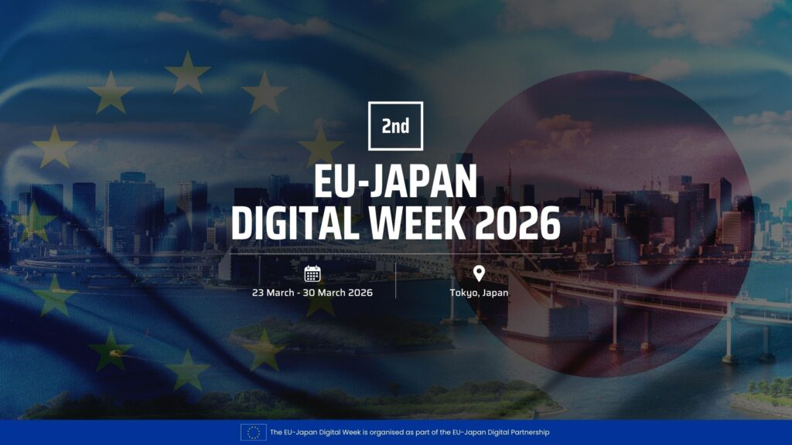

EU-Japan Digital Week 2026: un nouveau front de l'IA souveraine
L'EU-Japan Digital Week 2026 s'est ouverte à Tokyo le 23 mars avec un agenda commun sur l'IA, les semi-conducteurs, le calcul haute performance et les standards. C'est un signal récent et concret: la souveraineté IA se joue aussi dans les alliances technologiques structurées entre blocs partenaires.

1. Ce qui est officiellement lancé
Selon la publication officielle de la semaine numérique, l'édition 2026 (23-30 mars) active des chantiers conjoints autour de l'IA, des semi-conducteurs, du HPC et de l'interopérabilité. L'enjeu explicite est de renforcer la résilience technologique et l'autonomie stratégique des deux écosystèmes.
2. Pourquoi c'est structurant pour l'IA souveraine
La souveraineté IA ne dépend pas uniquement du modèle ou du cloud local. Elle dépend aussi d'un accès durable aux briques critiques (compute, composants, standards, gouvernance). Cette séquence UE-Japon renforce cette profondeur de chaîne de valeur, au-delà des annonces ponctuelles.
3. Lecture opérationnelle pour les organisations
Pour les équipes IT, data et conformité, le signal est d'intégrer la dimension géopolitique de la supply chain IA dans la roadmap: dépendances GPU, exigences de localisation, interopérabilité et clauses de réversibilité. Les arbitrages architecture doivent désormais inclure ces paramètres dès la phase de cadrage.
Prioriser un audit "dépendances critiques IA" (compute, cloud, modèles, données) pour identifier les zones de fragilité et définir un plan d'autonomie opérationnelle.
Lancer l'audit